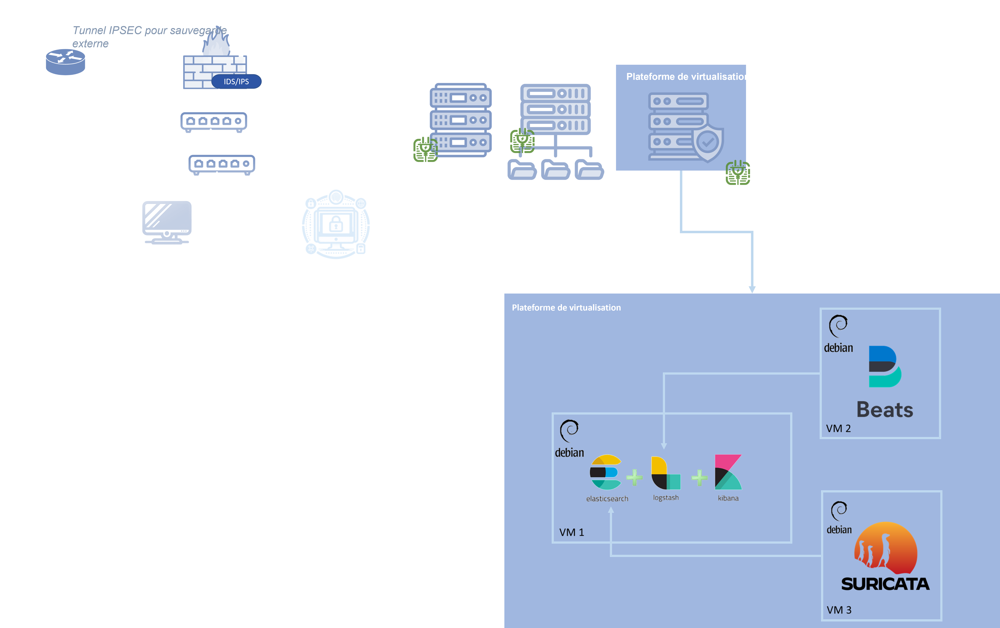
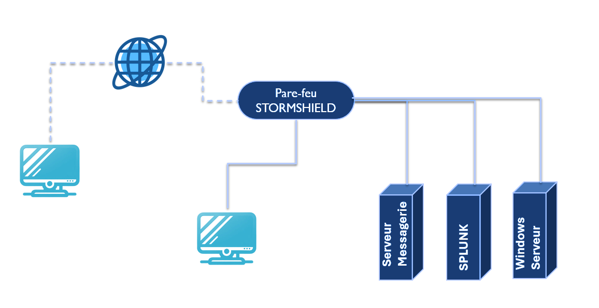
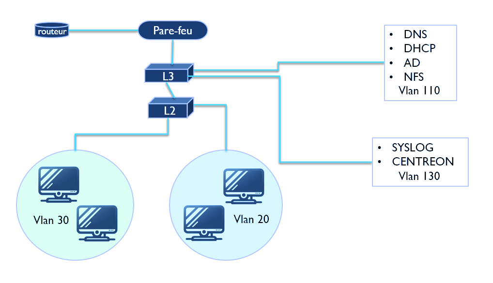

Portfolio
À propos de moi
Convictions
Toujours apprendre pour progresser, impatiente de m'améliorer et de m enrichir de nouveaux savoirs, pour me perfectionner et, être capable de bien travailler en équipe.
Objectif
Le monde est interconnecté et demande de plus en plus de personnes qualifiées, c'est pour quoi j'ai toujours voulu travailler dans le domaine de la cybersécurité .
Valeurs
● APPRENDRE
● TRAVAILLER
● REUSSIR
Mon Parcours
BUT Réseaux et Télécommunication option cybersécurité
2024J'étudie actuellement un BUT en Réseaux et Télécommunications option cybersécurité, ce qui me permet de développer des compétences dans la gestion, la sécurisation et l'optimisation des réseaux informatiques, ainsi que dans la cybersécurité.
Alternance CODECHAMP
2024Dans le cadre de mon alternance, je travaille sur un projet visant à mettre en place une solution de centralisation des journaux. Ce projet me permet de développer des compétences en gestion de données et en sécurité informatique.
BTS
2023J'ai obtenu un Brevet de Technicien Supérieur en Sercice Informatique aux Organisations avec l'option Solutions d'Infrastructure, Systèmes et Réseaux
Stage 2
2023Lors du second stage, j'ai dû effectuer une étude préalable de sécurisation du réseau informatique dans la société TTPM, j'ai également évaluer les coûts matériels, nécessaire pour la réalisation de ce projet, ainsi que la réalisation une veille technologique
Mes compétences
Cybersécurité
Kali Linux
◉◉◉◎◎
Compétences en tests d'intrusion de base dans un environnement contrôlé .
Stormshield
◉◉◉◎◎
Connaissances en VPN et en création de règles de filtrage pour renforcer la sécurité réseau.
Pfsense
◉◉◎◎◎
Mise en place de pare-feu incluant le filtrage et les portails captifs.
Cisco
◉◉◉◎◎
Compétences avec du matériel réseau tel que commutateurs et routeurs, notamment pour la sécurité, la création de VLANs et le routage.
IPv6
◉◉◉◎◎
Compétences dans la configuration et la gestion des adresses IPv6 pour renforcer la sécurité réseau.
WiFi
◉◎◎◎◎
Implémentation et gestion des réseaux sans fil.

Cowrie
Mise en place d’un système de gestion des identités et d’authentification (IAM/SSO).
Keycloack
Déploiement d’un honeypot interactif permettant l’analyse de tentatives d’intrusion par SSH.
Forensic
Autopsy
◉◉◎◎◎
Utilisation d’un outil d’analyse forensic pour explorer des disques et récupérer des fichiers supprimés dans le cadre d’enquêtes numériques.
Volatility
◉◉◎◎◎
Analyse de la mémoire vive (RAM) pour identifier des processus suspects et traces d’activités malveillantes.
Sleuthkit
◉◎◎◎◎
Exploitation d’outils en ligne de commande pour examiner des images disques et en extraire des preuves numériques.
Outils d'analyse et de monitoring
EBIOS
◉◉◎◎◎
Utilisation de la méthode EBIOS pour l'analyse et la gestion des risques liés à la cybersécurité.
SPLUNK
◉◉◉◎◎
Compétence en gestion et analyse des journaux système.
ELK
◉◉◉◎◎
Recherche et visualisation de données pour la sécurité et le suivi des infrastructures.
Zabbix
◉◉◎◎◎
Supervision des ressources système, des services réseau et des applications via des alertes.
GLPI
◉◉◉◎◎
Instalation et configuration d’un outil de gestion du parc informatique, le suivi des tickets, et l’organisation du support technique.
OpenStack
◉◉◉◎◎
Déploiement d’un cloud privé pour créer et gérer des machines virtuelles dans un environnement isolé et partagé.
Scripting et Automatisation
PowerShell
◉◉◎◎◎
Scripting pour automatiser et sécuriser des tâches sous Windows.
Bash
◉◉◉◉◎
Scripting Shell pour des tâches automatisées en environnement Linux.
Cloud (Ansible)
◉◎◎◎◎
Utilisation d'Ansible pour l'automatisation et la gestion sécurisée d'infrastructures dans le cloud.
Développement & Téléphonie
Gestion de projet
◉◉◎◎◎
Capacité à planifier, organiser et superviser efficacement des projets, en respectant les délais et les objectifs.
Téléphonie IP
◉◉◎◎◎
Compétences en implémentation et gestion de la voix sur IP, incluant la configuration de systèmes permettant la communication via un réseau Internet (VoIP).
HTML/CSS
◉◉◎◎◎
Connaissance en création et conception de pages internet.
Langues
Anglais
J'ai un niveau B2 en anglais, ce qui signifie que je peux bien communiquer et comprendre des sujets variés.
Espagnol
J'ai un niveau B1 en espagnol, ce qui signifie que je peux participer à des conversations simples et comprendre des sujets courants.
Certifications
CISCO
J'ai obtenu la certification Cisco dans le domaine introduction à la cybersécurité
PIX
La certification PIX est une certification conçu par les services publics, permettant d'évaluer ses compétences numérique que j'ai obtenu avec un total de points
Mes Fiches Procédures
Projet
Projet Alternance BUT
Schéma Infrastructure Réseau
 Contexte :
Mise en conformité avec la directive européenne NIS2 en centralisant les journaux du système d’information pour renforcer la détection et la gestion des incidents de sécurité.
Réalisation :
Déploiement de la pile ELK (Elasticsearch, Logstash, Kibana) dimensionnée selon le volume des logs à collecter, analyser et stocker.
Mise en place de pipelines de collecte avec Logstash et Filebeat pour normaliser les données issues de diverses sources.
Intégration de Suricata, moteur IDS/IPS, pour la détection en temps réel des intrusions réseau.
Création de tableaux de bord personnalisés avec Kibana pour faciliter l’analyse et la corrélation des événements.
Compétences acquises :
• Conception et gestion d’une architecture ELK complète
• Dimensionnement de clusters Elasticsearch adaptés à la volumétrie
• Intégration et configuration d’un IDS/IPS (Suricata) pour la sécurité réseau
• Conformité aux exigences de la directive NIS2
• Normalisation et analyse avancée des logs et alertes de sécurité
Axes d'amélioration
• Maîtrise limitée des performances avancées d’Elasticsearch en environnement distribué
• Connaissances encore partielles en tuning de Suricata (règles personnalisées, optimisation CPU/RAM)
• Nécessité d’approfondir les mécanismes de sécurité du cluster ELK (authentification, chiffrement, contrôle d’accès)
Projet
Projet BUT
Schéma Infrastructure Réseau
 Contexte
Dans le cadre de la SAE5Cyber 03, un projet d’infrastructure basé sur un environnement réel de PME a été mené, avec un test d'intrusion pour évaluer la sécurité.
Réalisation
L’infrastructure mise en place comprenait :
• Pare-feu Stormshield avec VPN ;
• Serveur Windows : Active Directory et DNS ;
• Serveur Debian : serveur de messagerie ;
• SIEM avec Splunk pour la centralisation des journaux ;
• Postes clients sous Windows 11.
Un test d'intrusion a permis d’identifier et d'exploiter plusieurs failles, notamment via :
• Scan réseau avec Nmap, révélant un serveur de messagerie et une faille SMTP ;
• Campagne de phishing pour obtenir des identifiants avec privilèges élevés ;
• Utilisation d'outils tels que Mimikatz, Setoolkit et BloodHound pour escalader les privilèges, établir un shell distant et cartographier l’Active Directory.
Améliorations sécuritaires
Pour remédier aux vulnérabilités détectées :
• Mise en place d’un serveur de centralisation des logs avec Splunk ;
• Installation et configuration de forwarders Splunk sur les machines Windows et Debian ;
• Configuration avancée de Sysmon pour détecter des menaces spécifiques.
Ce projet a permis de développer des compétences avancées en :
• Sécurisation d’infrastructures et identification des failles ;
• Analyse des attaques et mise en œuvre de solutions de protection telles que la centralisation des journaux et les alertes Splunk ;
• Gestion des outils SIEM pour une meilleure supervision et réactivité.
Ce travail simule les réalités professionnelles, renforçant les capacités à concevoir, tester et sécuriser une infrastructure réseau.
Projet BTS
Schéma Infrastructure Réseau
Dans le cadre du projet de BTS, visant à reproduire un réseau d'entreprise, plusieurs compétences essentielles ont été acquises :
• Infrastructure réseau : mise en place du routage, NAT-PAT, ACLs et VLANs pour segmenter le réseau selon le cahier des charges.
• Services réseaux : configuration d'un DHCP pour permettre aux appareils de recevoir automatiquement une adresse IP et d'autres paramètres réseau, d’un DNS pour la résolution des noms, d’un serveur de supervision, d’un contrôleur de domaine (Active Directory) pour gérer les utilisateurs, et d’un serveur de fichiers pour le stockage.
• Gestion et supervision : centralisation des journaux et surveillance des performances réseau.
Ce projet a développé des compétences en réseaux professionnels, améliorant la réponse aux besoins tout en assurant sécurité et efficacité.